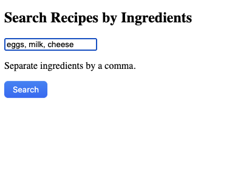
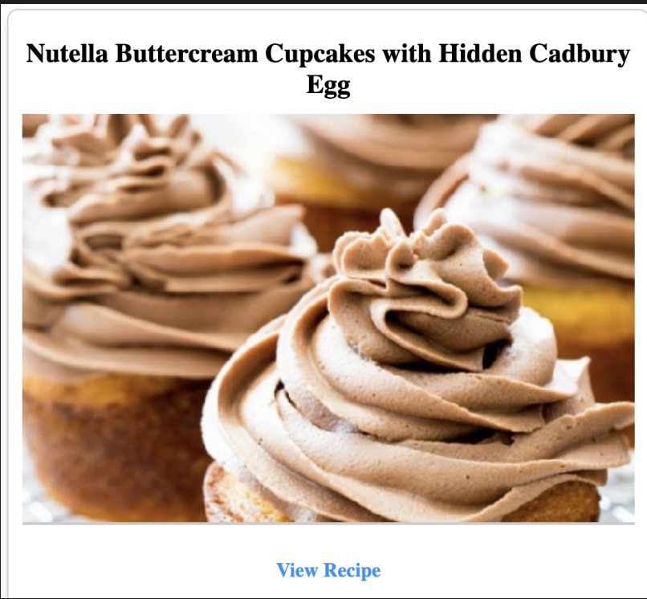
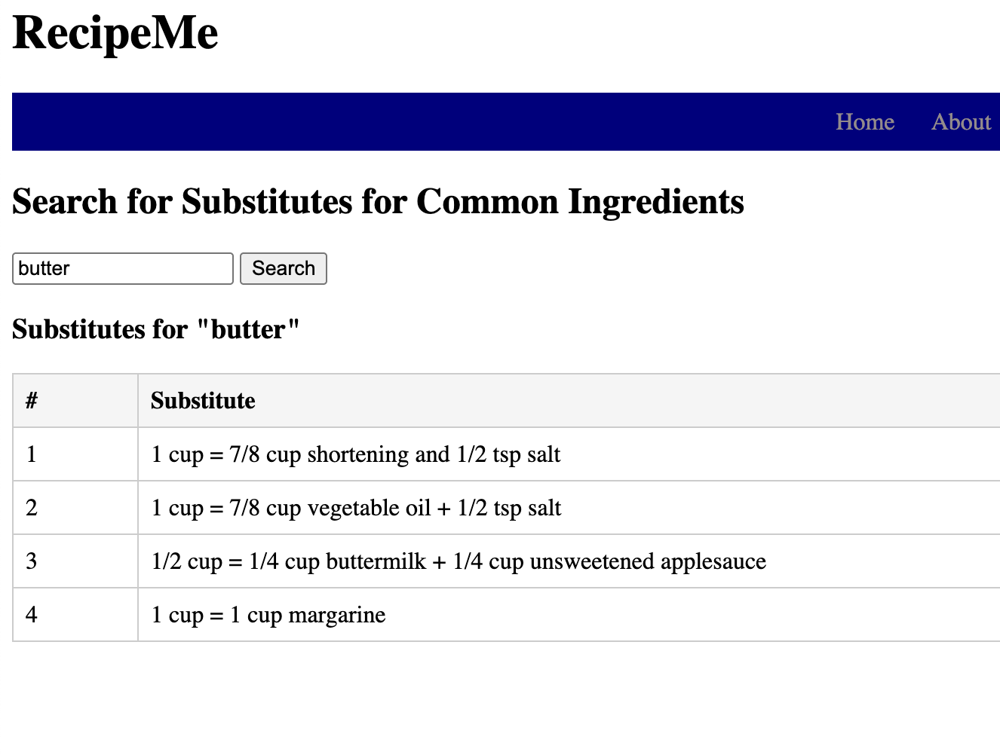

RecipeMe
Home
About
Help
Search
Favorites
Substitutes
Help Page
How to use RecipeMe

Step 1: Enter Ingredients
Step 2: View Results

Step 3: Click Recipe
Step 4: Save Favorite
Step 5: View Favorites
Step 6: View Substitutes

Step 7: View Substitutes
←
→
 Step 4: Save Favorite
Step 4: Save Favorite
 Step 5: View Favorites
Step 5: View Favorites
 Step 6: View Substitutes
Step 6: View Substitutes